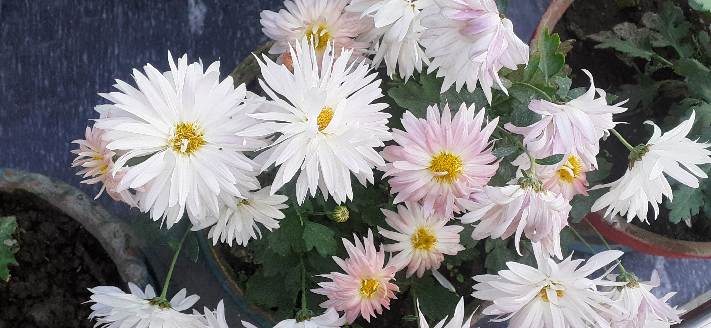

|

|
WHITE DAISY !!!!!!
THIS PICTURE IS OF WHITE DAISY.THIS PICTURE IS CLICKED BY MR.AARYAN SINGH SACHAN.
Like most white flowers, white daisies represent purity and innocence with their bright and fresh appearance.
White daises can be included in wedding flowers or wedding decor, which will look amazing for a spring wedding!
Or, sent to new parents as a congratulations bouquet.
White Daisy White Flower is a spray flower that has a classic bloom with many ray petals radiating
out from a disk-shaped center.
Each stem has an average of 3-5 flowers.
If a bride is hoping for pregnancy early in the marriage, ancient folklore suggests that she place a daisy in her left stocking.
|